Better UMD Health Portal
The UMD health portal is where students upload immunization records, book appointments and message the health center. It's also cluttered and hard to read. Our group redesigned it around one idea: show students what they need to do first. I turned our screens into a clickable prototype and tested it with 7 students.
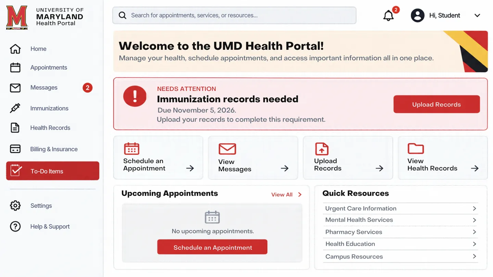
The problem
Everyone in our group had used the current portal, and nobody liked it. The home page is a stack of identical red buttons and long blocks of text. Important things, like a missing immunization record that can block course registration, look the same as everything else. Some features show up in more than one place, and the menu labels don't always say what's behind them.
In our midterm we put it like this: by the time a student figures out how to use the portal, they're so frustrated they don't want to go to the appointment anymore.
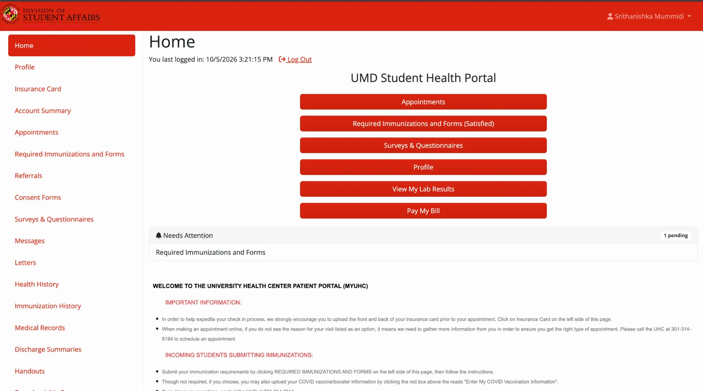
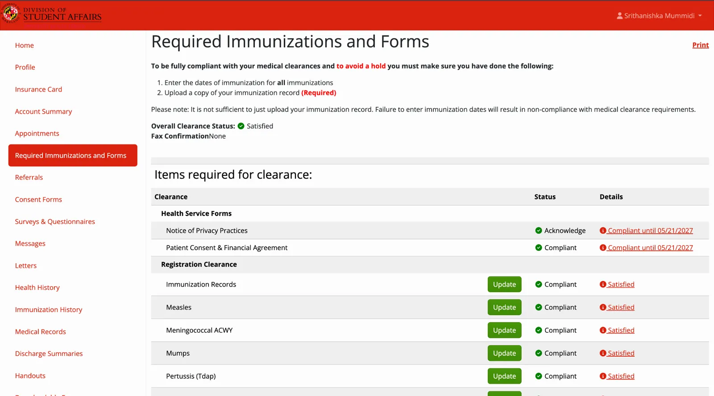
Who we designed for
We wrote personas for students and for the people on the other side of the portal. Three of them drove most of our screen decisions:
- Seli, 18, freshman. Doesn't realize her immunization records are missing. She needs a "Needs Attention" area with a clear deadline.
- Jay, 19, sophomore. Has to bounce between pages, download forms and guess where to submit. He needs one upload page with clear instructions.
- Maya, 21, senior. Graduating and needs her records and past appointments in one place.
We also wrote personas for a family medicine doctor (Dr. Mike) and a health center receptionist (Amara). Their pain point was the same as the students': when the portal is confusing, people enter things wrong, and staff have to clean it up.
What the research said
We read a few papers to back up our decisions. Lazard et al. (2015) found that how simple a patient portal looks affects whether people use it at all. A 2025 systematic review (Norouzi Aval et al.) pointed out that once patients use one feature, they tend to start using others. A paper on university branding (Curtis et al., 2009) helped us decide to keep UMD's colors and naming so the portal still feels official.
Sketching and iterating
We started on the whiteboard in class, listing problems with the current portal on sticky notes and sketching layouts. From there we made a paper prototype of the dashboard before moving into Canva. For the midterm, we put together a mixed-media presentation in about 30 minutes and got critiqued by another group and the TAs.
The TA feedback was to focus on fewer screens and be clearer about stakeholders. That narrowed us down to the dashboard, the immunization upload, messages and the to-do list.
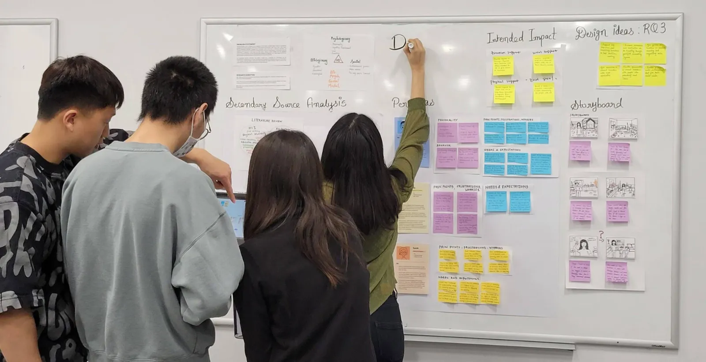
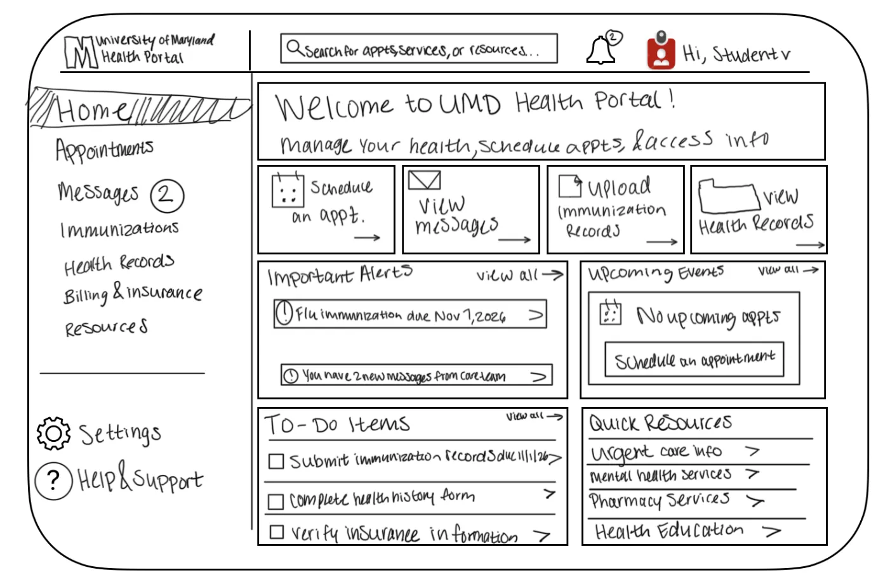
Keeping it UMD
We used UMD's red, gold, black and white, but softened the backgrounds with creams and light pinks so the page isn't harsh red on white everywhere. Later I checked these colors for contrast (section 07), and that turned up a problem with the gold.
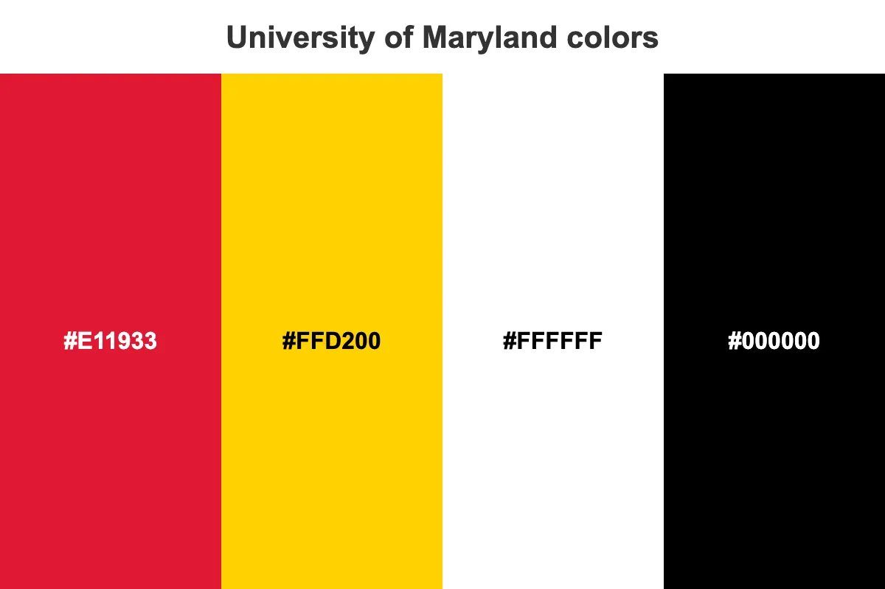
The redesign
The group designed the screens in Canva, with Mia Bujak building most of them. The main changes:
- Dashboard: a "Needs Attention" banner with the deadline and a button that takes you straight to the fix, then shortcuts, appointments and quick resources.
- Immunization upload: one page with steps, file requirements and a confirmation once you submit (for Jay).
- Messages: inbox and conversation side by side, with unread dots.
- To-do list: status counts at the top and one action button per task.
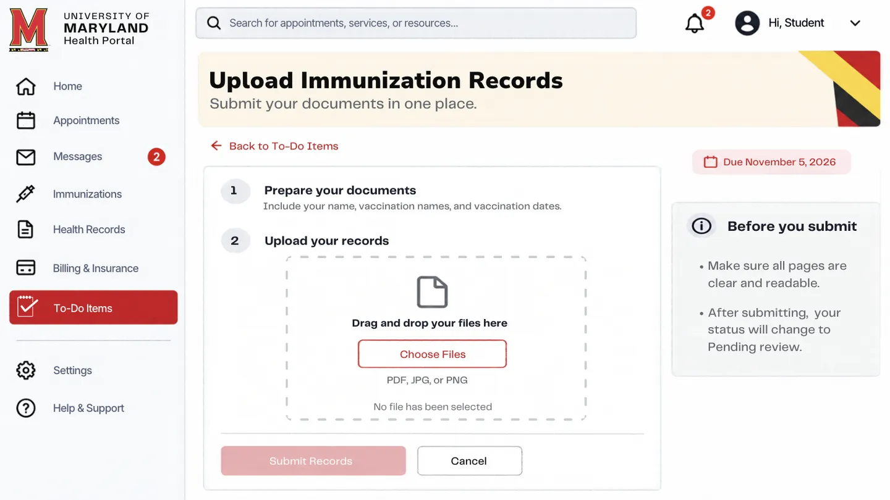
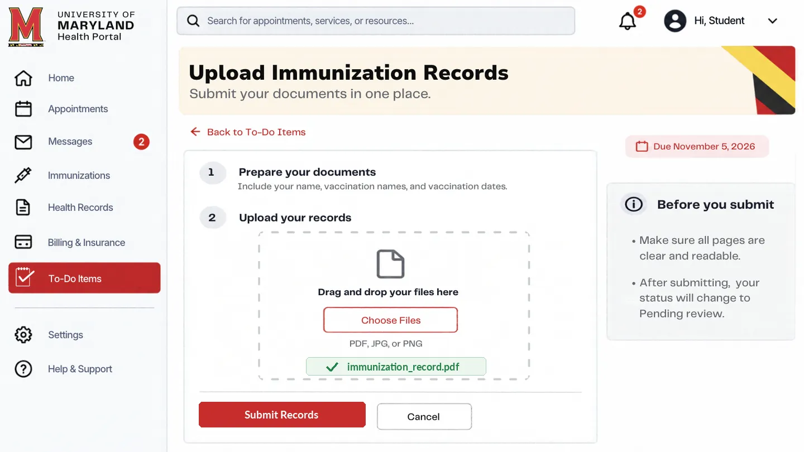
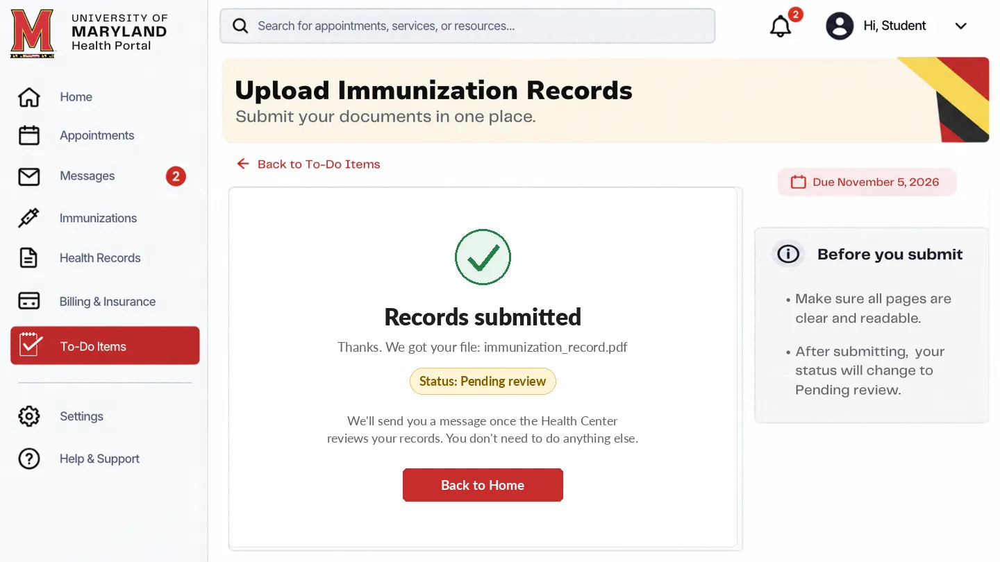
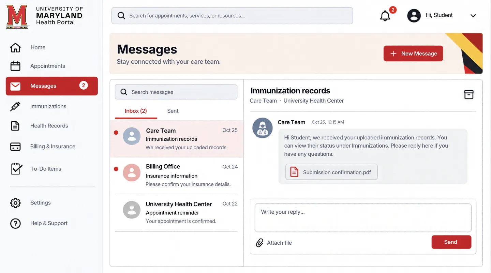
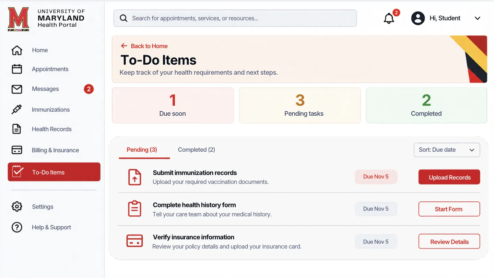
My part: making it testable
After the midterm, our next step was to "test whether students can easily find and complete important tasks." I took that on. Static Canva screens can't be tested, so I brought them into Figma and wired them up as a clickable prototype with hotspots for the dashboard, the upload flow, messages and the to-do list. Then I built a usability test in Maze so people could do it on their own laptop without me hovering over them.
I wrote four tasks, each one tied to a persona:
- Task 1, find what's missing (first click only): does the Needs Attention banner actually stand out? (Seli)
- Task 2, upload your immunization record: can people get through the upload flow to the confirmation? (Jay)
- Task 3, find the message confirming your records: is Messages easy to find and open?
- Task 4, find your list of health tasks: can people get to the to-do page from the dashboard?
After the tasks, testers said which task was due first, rated how easy the portal was from 1 to 7, and described it in three words. I turned off the camera requirement Maze adds by default, since we didn't need video of anyone's face.
Results
7 UMD students took the test on November 22–23, 2026. I left out my own practice run. It's a small group, so I treat these as signals, not proof.
| Task | Completed | Median time | What happened |
|---|---|---|---|
| 1. Find what's missing | 6 / 7 | 9.7 s | 6 clicked Upload Records first. 1 clicked the profile name. |
| 2. Upload record | 7 / 7 | 8.8 s | One person took 78 s after checking Messages and To-Do first. |
| 3. Find the message | 7 / 7 | 7.3 s | Fastest task, almost no misclicks. |
| 4. Find the to-do list | 7 / 7 | 10.0 s | 4 of 7 went to Messages before finding To-Do. Two took over 35 s. |
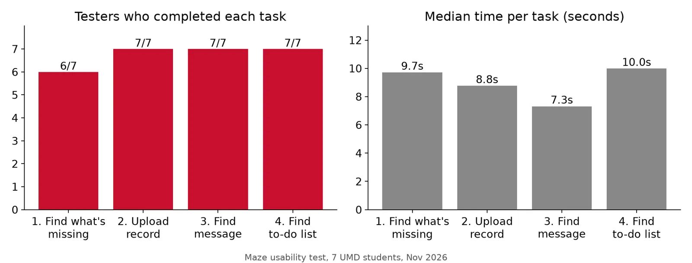
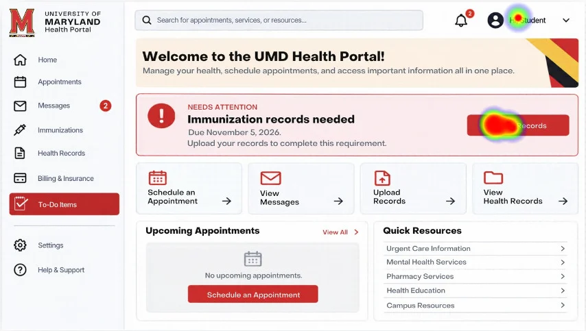
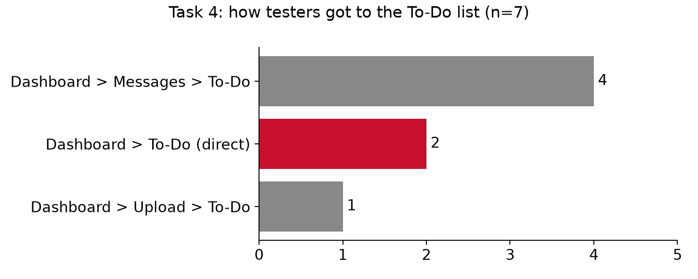
How it felt
The average ease rating was 6.3 out of 7, and nobody went below a 5. All 7 testers said the immunization records were due first.
That last one needs an asterisk. When I updated a due date in the prototype, two to-do items ended up with the same date, and one tester called it out. So that answer probably shows which task looked most urgent, not whether people read the dates.
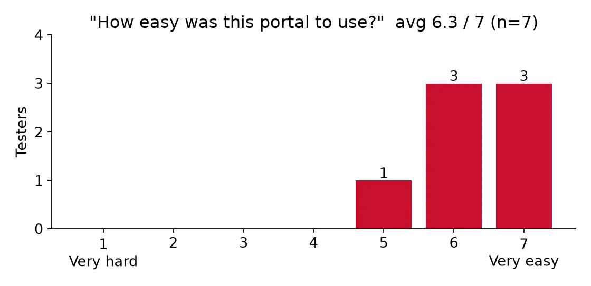
“Easy-to-use, colorful, UMD. The only confusing part was the task list bc they both had the same due date!”
“Healthy, Understandable, Chill”
“Straightforward, easy, uniform”
“simple, concise, nice”
“static, simple. alright”
Why was To-Do harder to find?
Looking at the Task 4 heatmap, people clicked Home, Messages, the bell and their profile, but not the To-Do button, even though it's right there in the sidebar. My best guess is that To-Do is highlighted in solid red on the dashboard, the same style the sidebar uses for the page you're on, so it reads as "you are here" instead of a link. Nobody said that directly, so it's a hypothesis to test next.
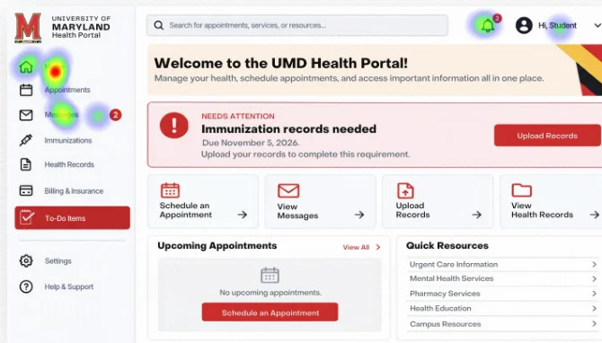
Accessibility check
One of our goals after the midterm was to check contrast against WCAG AA. I ran the UMD colors through the WCAG contrast formula. Normal text needs at least 4.5:1, and large text needs 3:1 (WCAG 2.1, 1.4.3).
| Color pair | Ratio | Normal text (4.5:1) | Large text (3:1) |
|---|---|---|---|
| UMD red #E11933 on white | 4.79 : 1 | Pass | Pass |
| UMD gold #FFD200 on white | 1.45 : 1 | Fail | Fail |
| UMD red #E11933 on black | 4.39 : 1 | Fail | Pass |
| UMD gold #FFD200 on black | 14.47 : 1 | Pass | Pass |
Our main pairing, red on white, passes, though just barely. Gold should never carry text on a white or cream background. It's fine as a decorative stripe, but any text in gold needs a dark background. Red text on black should only be used for big headings.
What we'd change next
- Make To-Do look like a link. Take the solid red off the To-Do button on the dashboard, and add a small "3 tasks" card next to the banner. Then re-run Task 4 to see if the detour through Messages goes away.
- Give every task its own due date, and add an "urgent" tag so the order is obvious.
- Keep gold for decoration only, based on the contrast check.
- Bigger text. This was flagged at the midterm, and the sidebar labels are still small.
- Test with more people, including students who have actually had a records hold, and compare against the current portal on the same tasks.
What I learned
The biggest thing was how much a test tells you that a critique doesn't. Task 1 confirmed what we expected about the banner. But none of us had flagged the To-Do problem in critique, because when you're looking at a screen and talking about it, you're not actually trying to find something. Seeing 4 out of 7 people go the wrong way first was more convincing than any comment.
I also learned to be careful with my own numbers. A small sample, a due-date change that affected one question, my own practice run sitting in the results: all of that had to be cleaned up or called out before the numbers meant anything. And since this class is about communicating design, I tried to write the results so that someone who wasn't in our group could understand them without me there to explain.